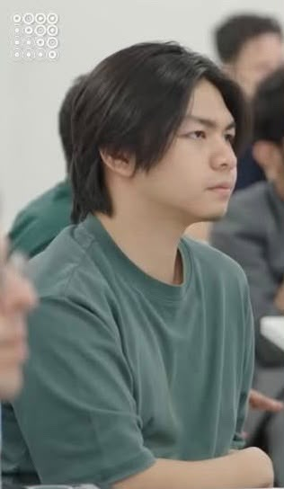
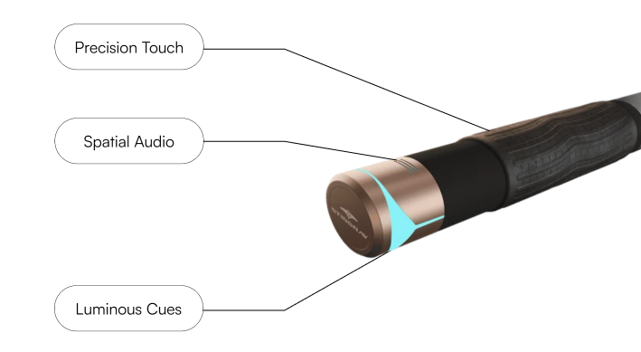
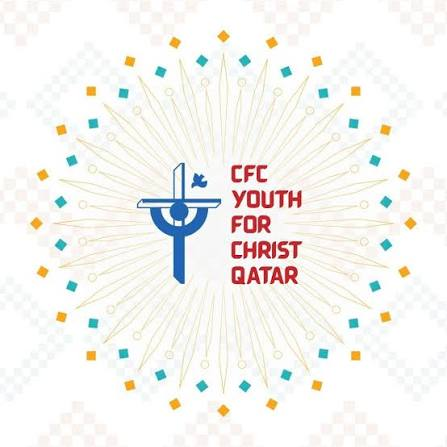
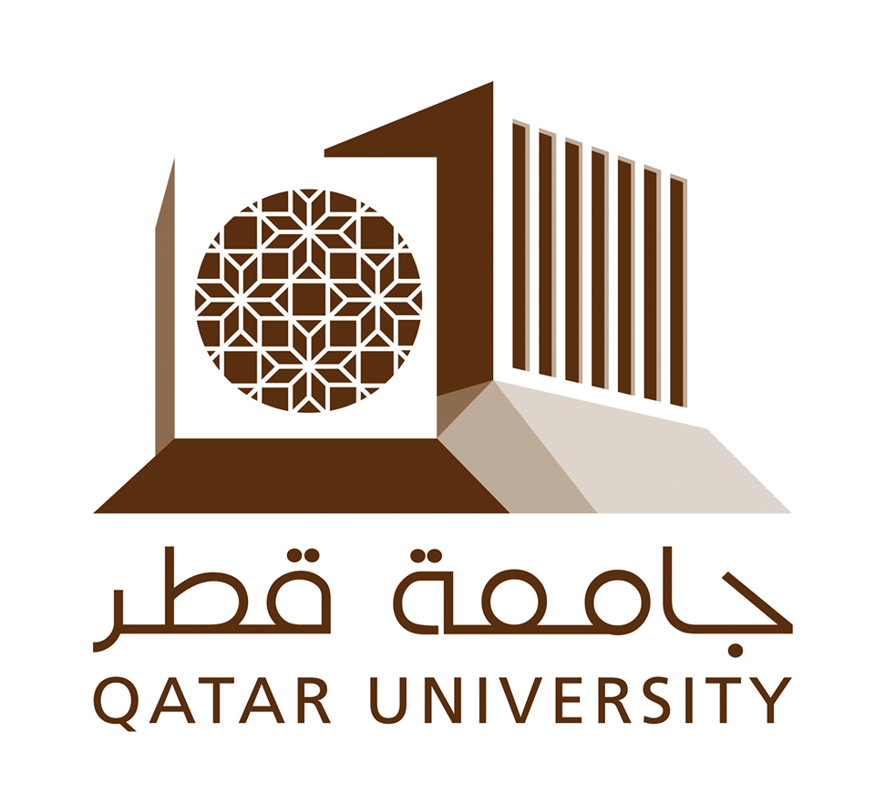
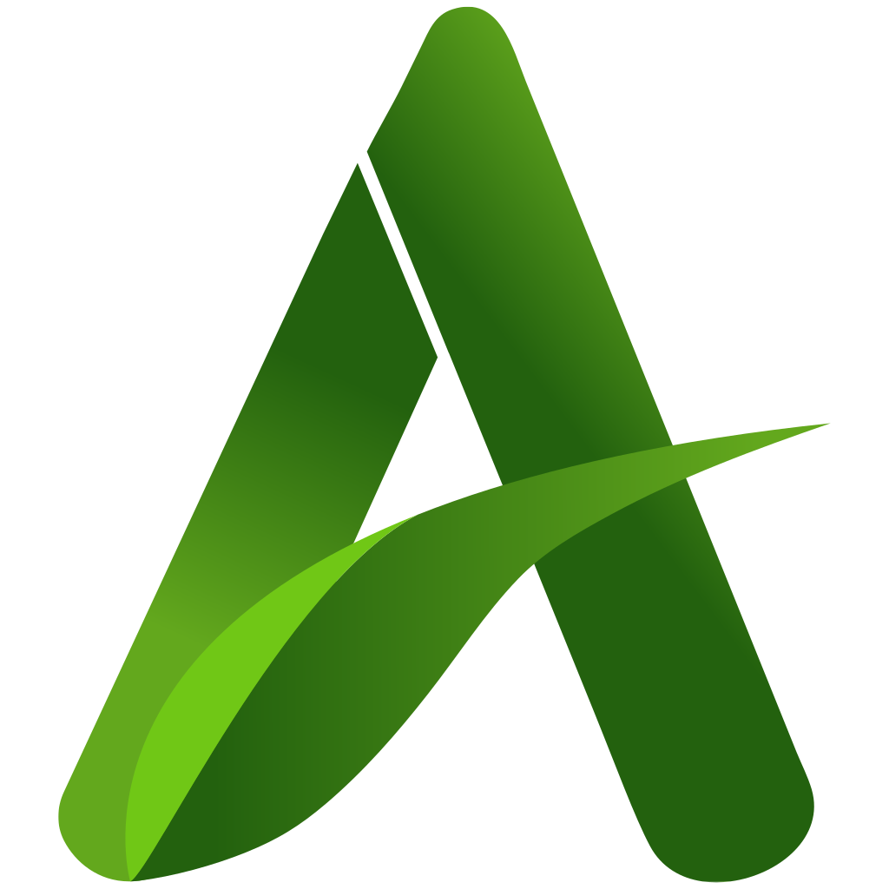

MindBridge XR · Qatar Science and Technology Park
PERMANENT COLLECTION / 2026
EXHIBIT 01 / INTRODUCTION
Building systems
worth understanding.
Gabriel Alcantara is a full-stack and embedded-systems builder working across software, connected devices, XR, and practical technical support.
Download CV ↓
University of Doha for Science and Technology
Philippine International School - Qatar
PISQ Capstone Project competition
SOFTWARE◆EMBEDDED SYSTEMS◆XR◆REAL-WORLD PROTOTYPES◆SOFTWARE◆EMBEDDED SYSTEMS
GALLERY I
Selected projects
Works on
display.
Each piece is a record of how I approach a problem: observe it, understand it, and build a useful response.

01 / MINDBRIDGE XR
Stingray Smart Bar
Sensor-based rehabilitation technology built around movement feedback.

02 / INDEPENDENT BUILD
Dreamveil
GenAI that transforms dreams into visual storyboards.

03 / CAPSTONE PROJECT
AFSSC
Automatic Fire Suppression System for Cars.
GALLERY II
Toolkit
Materials &
methods.
A varied toolkit lets me follow a problem from interface to database to device.
Software
Python, JavaScript, HTML/CSS, React/Vite, responsive UI, REST APIs, application debugging
Backend & data
FastAPI, PostgreSQL, SQL, SQLAlchemy, API development, real-time data workflows
Physical computing
Arduino, ESP32/ESP32-S3, C/C++, firmware, IMU sensors, I²C, MQTT, IoT
IT & hardware
PC assembly, diagnostics, Windows deployment, BIOS, drivers, data recovery
Tools
Git/GitHub, VS Code, Arduino IDE, PostgreSQL, Microsoft Excel, CapCut
Experience & support
XR, technical documentation, end-user support, live-event operations
GALLERY III
Experience
Places that
shaped the work.
Teams, live environments, and people who needed technology to work.
2026 / XR & SPORT TECH

MindBridge XR
Full-Stack & Embedded Systems Intern2024–PRESENT / FIELD WORK
Freelance PC Technician
Independent technical support2023–2024 / LEADERSHIP

Youth for Christ Qatar
Technical Head2025–2026 / SIMULATION

Qatar University
Simulated Patient2026 / COMMUNITY

AgriTeQ · UDST
Student volunteerGALLERY IV
Credentials
Provenance.
Education, recognition, and milestones behind the collection.
BSc Information Technology
University of Doha for Science and Technology
Grade 12, With Honors
Philippine International School - Qatar
3rd Overall HS Capstone Project
Philippine International School - Qatar
4th Best Abstract, HS Capstone Project
Philippine International School - Qatar
AgriTeQ Exhibitor
University of Doha for Science and Technology
GALLERY V
Artist statement
“I’m drawn to systems with depth—things that reward curiosity, research, and careful tuning.”
Curiosity is my operating system.
I like knowing what moves the needle, what could break, and how the pieces affect one another. That mindset follows me from hardware and gaming into every product I build.
VISITOR SERVICES
Find Gabriel online